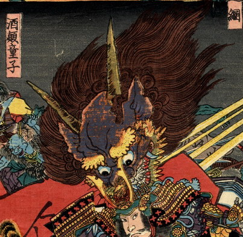

酒呑童子；シュテンドウジ

源頼光に飛び掛かる酒呑童子の大首。髪は逆立ち、頭頂には2本の鋭い角がある。耳まで裂けた口から牙が覗いている。
著作者：一寿斎国政（歌川国政）／出典：親書誌：U426_nichibunken_0231：四天王大江山入之圖；シテンノウオオエヤマノズ／日付：2010／資源識別子：U426_nichibunken_0231_0005_0000
Copyright (c)2010- International Research Center for Japanese Studies, Kyoto, Japan. All rights reserved.